2장 1부 ｢Lostbelt No.1: 영구동토제국 아나스타샤｣ 개막!
2020/04/01
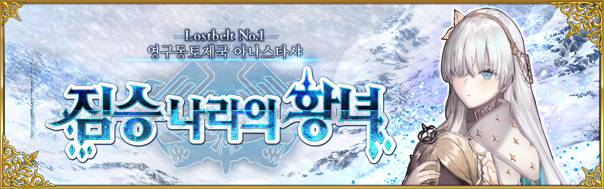

공개 정보
◆ 공개 일시 ◆
2020년 4월 1일(수) 점검 후~
◆ 2부 1장 〈Lostbelt No.1 영구동토제국 아나스타샤 짐승 나라의 황녀〉 개막 ◆
무대는 인류사 멸망 후의 신세계.
영구동토라는 극한의 땅에서 새로운 이야기가 펼쳐집니다!
◆ 개방 조건 ◆
2부 프롤로그 〈서/2019년 12월 31일〉을 클리어
※ 아종특이점( I부터 IV까지)을 클리어할 필요는 없습니다.
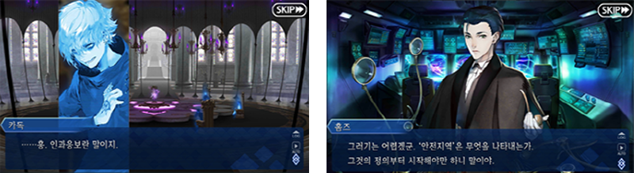
【페이트/그랜드 오더】 2부 1장 영상
신규 마술예장 '극지용 칼데아 제복' 등장!
신규 마술예장 '극지용 칼데아 제복' 등장!
2부 1장 〈Lostbelt No.1 영구동토제국 아나스타샤 짐승 나라의 황녀〉의
메인 퀘스트를 진행하면
신규 마술예장 '극지용 칼데아 제복'을 획득할 수 있습니다.
마술예장
극지용 칼데아 제복
스킬 강화&영기재림 재료 신규 아이템 추가!
2부 1장 〈Lostbelt No.1 영구동토제국 아나스타샤 짐승 나라의 황녀〉부터
신규 아이템 2종이 추가됩니다!
새롭게 등장하는 서번트의 스킬 강화 및 영기재림을 위해서는
신규 아이템이 필요합니다.
주로 2부 1장 〈Lostbelt No.1 영구동토제국 아나스타샤 짐승 나라의 황녀〉
메인 퀘스트에서 출현하는 적을 처치하면 전리품으로 획득 가능합니다.
영원결빙
상온에서도 녹지 않는 얼음.
어쩐지 꽃처럼 보이지 않는 것도 아니지만,
아름다움을 이해하지 못하는 자에게는
단순한 얼음에 지나지 않는다.
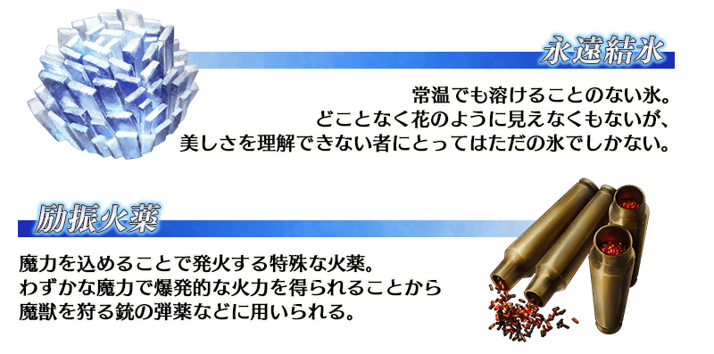
여진화약
마력을 집어넣으면 발화하는 특수한 화약.
적은 양의 마력으로 폭발적인 화력을 얻을 수 있어
마수를 사냥하는 총의 탄약 등에 사용된다.
마슈 키리에라이트 배틀 모션 및 보구 연출 리뉴얼!
마슈 키리에라이트의 배틀 모션 및 보구 연출을 리뉴얼합니다.
배틀 모션과 보구 연출뿐 아니라 마슈 키리에라이트의 배틀 그래픽도 변경되며 공격 시, 또는 보구 연출의 이펙트 효과 등도 변경됩니다.
※ 게임 내의 일부 퀘스트에서는 변경 전 상태로 표시되는 부분이 있습니다.
◆ 리뉴얼 일시 ◆
2020년 4월 1일(수) 점검 후~
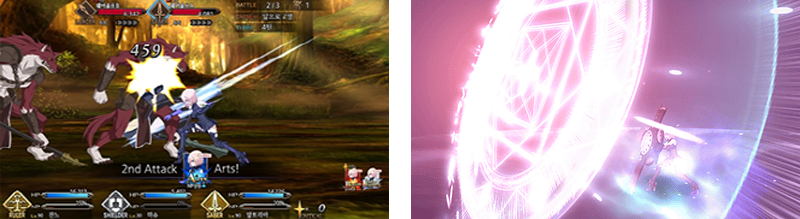
친구 포인트 소환으로 획득 가능한 ★1(C), ★2(UC) 개념예장 리뉴얼!
친구 포인트 소환으로 획득 가능한 ★1(C) 및 ★2(UC) 모든 개념예장을 리뉴얼 합니다. (일러스트나 ATK/HP 및 스킬 등도 모두 신규 업데이트)
업데이트 이후 리뉴얼 대상인 기존 개념예장은 새로 입수할 수 없습니다. 이점 주의하시기 바랍니다.
※ 이미 소지하고 있는 리뉴얼 대상 개념예장은 일러스트나 ATK/HP 및 스킬 효과가 변경되지 않습니다.
◆ 더 이상 획득할 수 없는 개념예장 목록 ◆
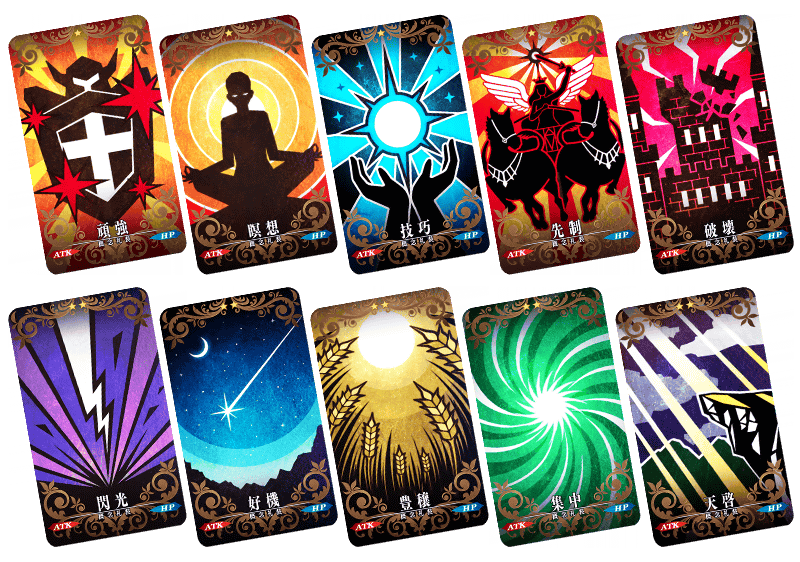
◆ 신규 추가되는 개념예장 목록 ◆
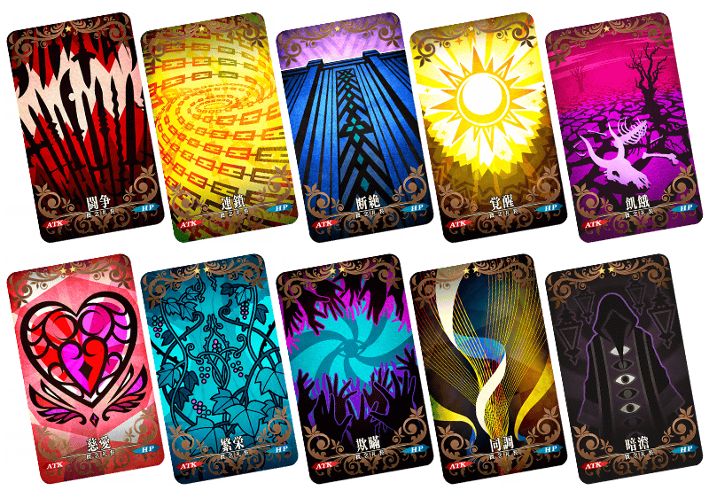
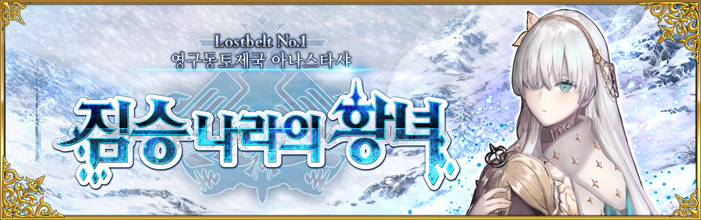
2020년 4월 1일(수) 점검 후~
무대는 인류사 멸망 후의 신세계.
영구동토라는 극한의 땅에서 새로운 이야기가 펼쳐집니다!
2부 프롤로그 〈서/2019년 12월 31일〉을 클리어
※ 아종특이점( I부터 IV까지)을 클리어할 필요는 없습니다.
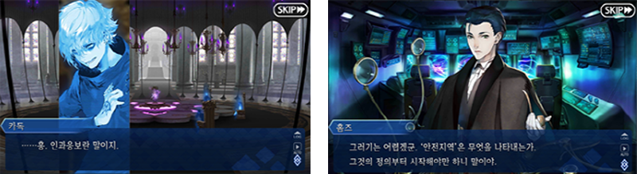
｢Fate/Grand Order -Cosmos in the Lostbelt-｣ 영구동토제국 아나스타샤
애니메이션 제작: A-1 Pictures2부 1장 〈Lostbelt No.1 영구동토제국 아나스타샤 짐승 나라의 황녀〉의
메인 퀘스트를 진행하면
신규 마술예장 '극지용 칼데아 제복'을 획득할 수 있습니다.
극한 환경에서의
활동을 상정한 마술예장
활동을 상정한 마술예장
신규 아이템 2종이 추가됩니다!
새롭게 등장하는 서번트의 스킬 강화 및 영기재림을 위해서는
신규 아이템이 필요합니다.
주로 2부 1장 〈Lostbelt No.1 영구동토제국 아나스타샤 짐승 나라의 황녀〉
메인 퀘스트에서 출현하는 적을 처치하면 전리품으로 획득 가능합니다.
어쩐지 꽃처럼 보이지 않는 것도 아니지만,
아름다움을 이해하지 못하는 자에게는
단순한 얼음에 지나지 않는다.
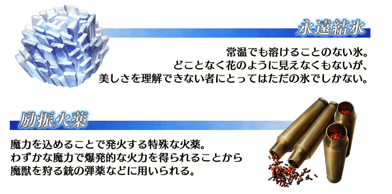
적은 양의 마력으로 폭발적인 화력을 얻을 수 있어
마수를 사냥하는 총의 탄약 등에 사용된다.
배틀 모션과 보구 연출뿐 아니라 마슈 키리에라이트의 배틀 그래픽도 변경되며 공격 시, 또는 보구 연출의 이펙트 효과 등도 변경됩니다.
※ 게임 내의 일부 퀘스트에서는 변경 전 상태로 표시되는 부분이 있습니다.
2020년 4월 1일(수) 점검 후~
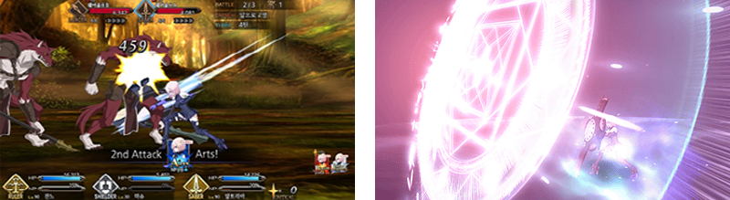
마슈 키리에라이트 - 가상보구 의사전개/인리의 초석 - 로드 칼데아스
업데이트 이후 리뉴얼 대상인 기존 개념예장은 새로 입수할 수 없습니다. 이점 주의하시기 바랍니다.
※ 이미 소지하고 있는 리뉴얼 대상 개념예장은 일러스트나 ATK/HP 및 스킬 효과가 변경되지 않습니다.
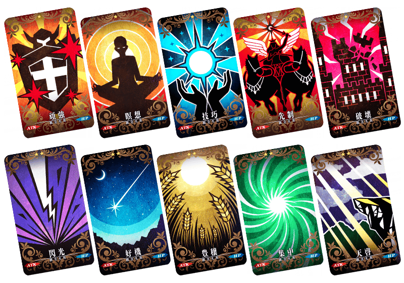
| 아이콘 | 레어도 | No. 이름 |
스킬 | 아이콘 | 레어도 | No. 이름 |
스킬 |
|---|---|---|---|---|---|---|---|
| ★ | No.001 완강 | 자신의 방어력 3% UP [최대해방시] 5% UP | ★★ | No.006 섬광 | 자신의 크리티컬 위력 5% UP [최대해방시] 10% UP | ||
| ★ | No.002 명상 | 자신의 약화 내성 5% UP [최대해방시] 10% UP | ★★ | No.007 호기 | 자신의 스타 발생률 5% UP [최대해방시] 10% UP | ||
| ★ | No.003 기교 | 자신의 Arts 카드 성능 3% UP [최대해방시] 5% UP | ★★ | No.008 풍양 | 자신의 NP를 10% 차지한 상태로 배틀을 개시 [최대해방시] 20% | ||
| ★ | No.004 선제 | 자신의 Quick 카드 성능 3% UP [최대해방시] 5% UP | ★★ | No.009 집중 | 자신의 NP 획득량 5% UP [최대해방시] 10% UP | ||
| ★ | No.005 파괴 | 자신의 Buster 카드 성능 3% UP [최대해방시] 5% UP | ★★ | No.010 천계 | 자신의 보구 위력 5% UP [최대해방시] 10% UP |
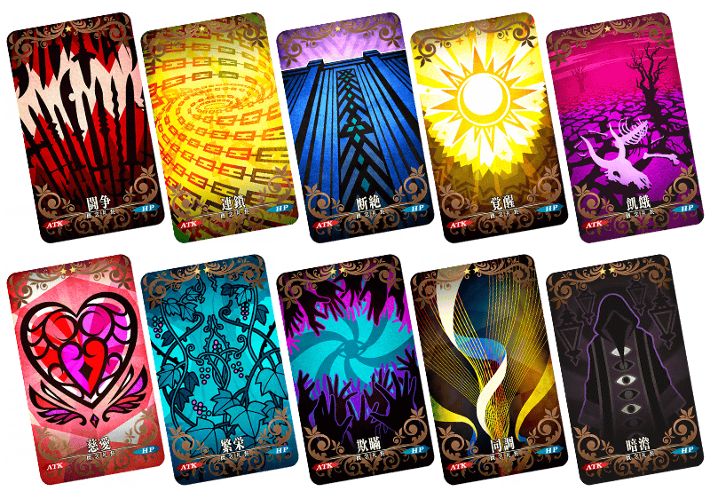
| 아이콘 | 레어도 | No. 이름 |
스킬 | 아이콘 | 레어도 | No. 이름 |
스킬 |
|---|---|---|---|---|---|---|---|
| ★ | No.777 투쟁 | 자신의 공격력 2% UP [최대해방시] 5% UP | ★★ | No.782 자애 | 자신의 HP회복량 3% UP [최대해방시] 5% UP | ||
| ★ | No.778 연쇄 | 자신에게 데미지 플러스 30상태 부여 [최대해방시] +50 | ★★ | No.783 번영 | 자신에게 매 턴 HP 30회복 상태를 부여 [최대해방시] 50 | ||
| ★ | No.779 단절 | 자신에게 데미지 컷 30상태 부여 [최대해방시] 50 | ★★ | No.784 기만 | 자신의 약화 부여 성공률 3% UP [최대해방시] 5% | ||
| ★ | No.780 각성 | 자신의 스타 집중도 50% UP [최대해방시] 100% UP | ★★ | No.785 동조 | 자신의 강화 성공률 3% UP [최대해방시] 5% UP | ||
| ★ | No.781 기아 | 자신의 피 데미지 NP 획득량 15% UP [최대해방시] 20% UP | ★★ | No.786 암담 | 자신의 즉사내성 5% UP [최대해방시] 10% UP |